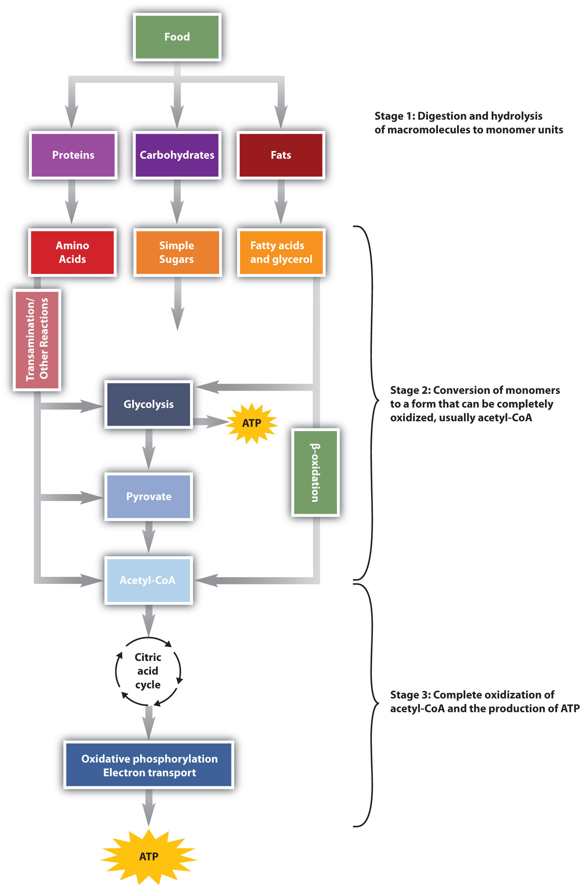
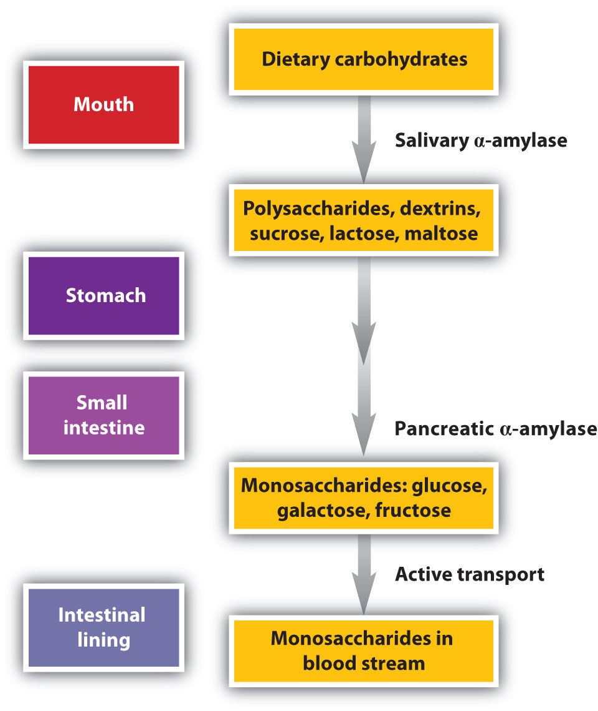
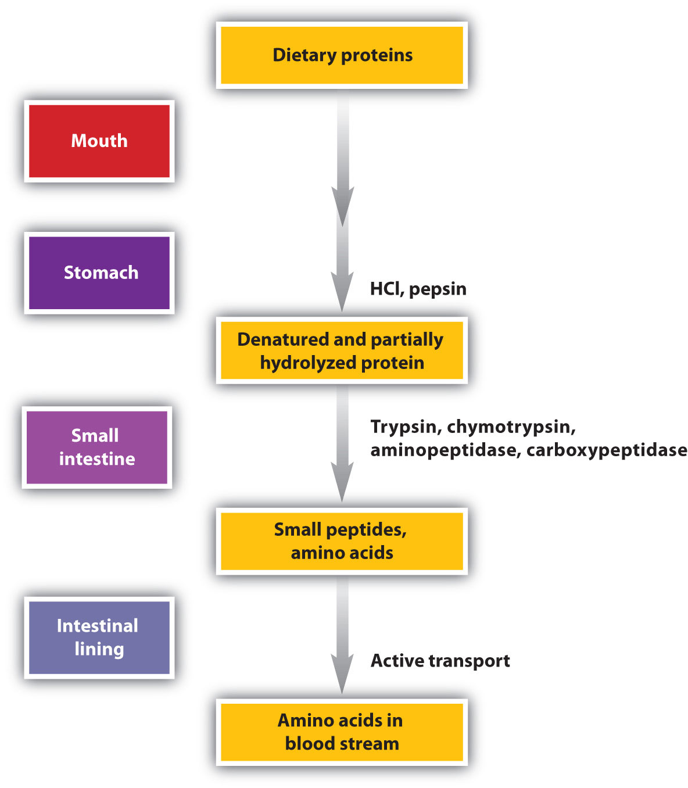
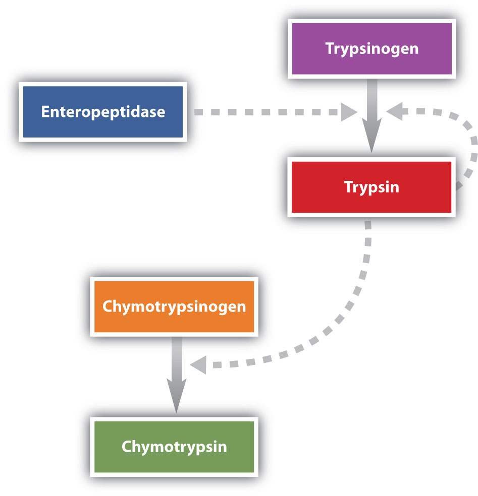
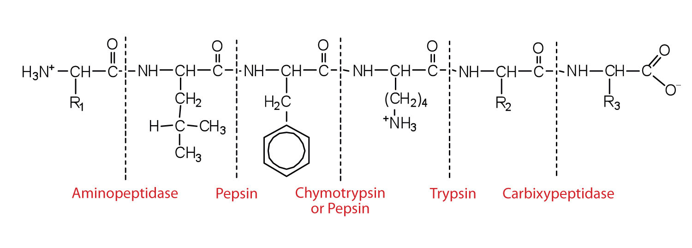
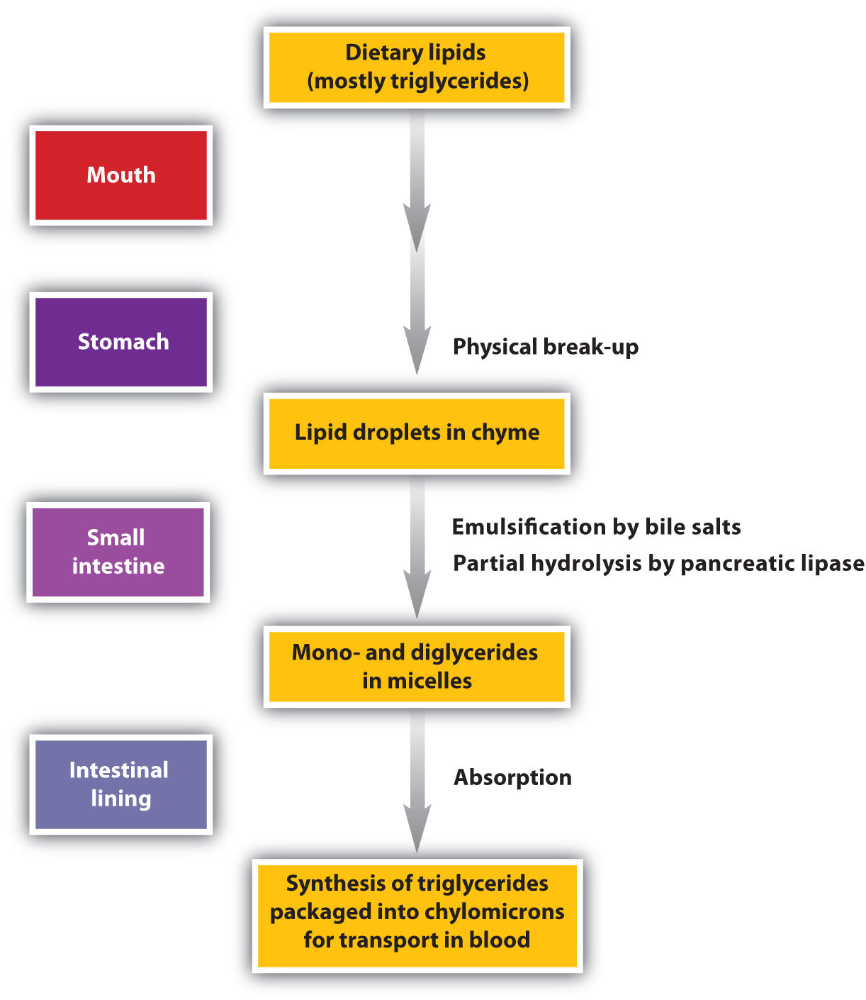

We have said that animals obtain chemical energy from the food—carbohydrates, fats, and proteins—they eat through reactions defined collectively as catabolism. We can think of catabolism as occurring in three stages (Figure 20.4 "Energy Conversions"). In stage I, carbohydrates, fats, and proteins are broken down into their individual monomer units: carbohydrates into simple sugars, fats into fatty acids and glycerol, and proteins into amino acids. One part of stage I of catabolism is the breakdown of food molecules by hydrolysis reactions into the individual monomer units—which occurs in the mouth, stomach, and small intestine—and is referred to as digestionThe breakdown of food molecules by hydrolysis reactions into the individual monomer units in the mouth, stomach, and small intestine..
In stage II, these monomer units (or building blocks) are further broken down through different reaction pathways, one of which produces ATP, to form a common end product that can then be used in stage III to produce even more ATP. In this chapter, we will look at each stage of catabolism—as an overview and in detail.
Figure 20.4 Energy Conversions
The conversion of food into cellular energy (as ATP) occurs in three stages.
Carbohydrate digestion begins in the mouth (Figure 20.5 "The Principal Events and Sites of Carbohydrate Digestion"), where salivary α-amylase attacks the α-glycosidic linkages in starch, the main carbohydrate ingested by humans. Cleavage of the glycosidic linkages produces a mixture of dextrins, maltose, and glucose. (For more information about carbohydrates, see Chapter 16 "Carbohydrates".) The α-amylase mixed into the food remains active as the food passes through the esophagus, but it is rapidly inactivated in the acidic environment of the stomach.
Figure 20.5 The Principal Events and Sites of Carbohydrate Digestion
The primary site of carbohydrate digestion is the small intestine. The secretion of α-amylase in the small intestine converts any remaining starch molecules, as well as the dextrins, to maltose. Maltose is then cleaved into two glucose molecules by maltase. Disaccharides such as sucrose and lactose are not digested until they reach the small intestine, where they are acted on by sucrase and lactase, respectively. The major products of the complete hydrolysis of disaccharides and polysaccharides are three monosaccharide units: glucose, fructose, and galactose. These are absorbed through the wall of the small intestine into the bloodstream.
Protein digestion begins in the stomach (Figure 20.6 "The Principal Events and Sites of Protein Digestion"), where the action of gastric juice hydrolyzes about 10% of the peptide bonds. Gastric juiceA mixture of water, inorganic ions, hydrochloric acid, and various enzymes and proteins found in the stomach. is a mixture of water (more than 99%), inorganic ions, hydrochloric acid, and various enzymes and other proteins.
The pain of a gastric ulcer is at least partially due to irritation of the ulcerated tissue by acidic gastric juice.
Figure 20.6 The Principal Events and Sites of Protein Digestion
The hydrochloric acid (HCl) in gastric juice is secreted by glands in the stomach lining. The pH of freshly secreted gastric juice is about 1.0, but the contents of the stomach may raise the pH to between 1.5 and 2.5. HCl helps to denature food proteins; that is, it unfolds the protein molecules to expose their chains to more efficient enzyme action. The principal digestive component of gastric juice is pepsinogen, an inactive enzyme produced in cells located in the stomach wall. When food enters the stomach after a period of fasting, pepsinogen is converted to its active form—pepsin—in a series of steps initiated by the drop in pH. Pepsin catalyzes the hydrolysis of peptide linkages within protein molecules. It has a fairly broad specificity but acts preferentially on linkages involving the aromatic amino acids tryptophan, tyrosine, and phenylalanine, as well as methionine and leucine.
Protein digestion is completed in the small intestine. Pancreatic juice, carried from the pancreas via the pancreatic duct, contains inactive enzymes such as trypsinogen and chymotrypsinogen. They are activated in the small intestine as follows (Figure 20.7 "Activation of Some Pancreatic Enzymes in the Small Intestine"): The intestinal mucosal cells secrete the proteolytic enzyme enteropeptidase, which converts trypsinogen to trypsin; trypsin then activates chymotrypsinogen to chymotrypsin (and also completes the activation of trypsinogen). Both of these active enzymes catalyze the hydrolysis of peptide bonds in protein chains. Chymotrypsin preferentially attacks peptide bonds involving the carboxyl groups of the aromatic amino acids (phenylalanine, tryptophan, and tyrosine). Trypsin attacks peptide bonds involving the carboxyl groups of the basic amino acids (lysine and arginine). Pancreatic juice also contains procarboxypeptidase, which is cleaved by trypsin to carboxypeptidase. The latter is an enzyme that catalyzes the hydrolysis of peptide linkages at the free carboxyl end of the peptide chain, resulting in the stepwise liberation of free amino acids from the carboxyl end of the polypeptide.
Figure 20.7 Activation of Some Pancreatic Enzymes in the Small Intestine
Aminopeptidases in the intestinal juice remove amino acids from the N-terminal end of peptides and proteins possessing a free amino group. Figure 20.8 "Hydrolysis of a Peptide by Several Peptidases" illustrates the specificity of these protein-digesting enzymes. The amino acids that are released by protein digestion are absorbed across the intestinal wall into the circulatory system, where they can be used for protein synthesis.
Figure 20.8 Hydrolysis of a Peptide by Several Peptidases
This diagram illustrates where in a peptide the different peptidases we have discussed would catalyze hydrolysis the peptide bonds.
Lipid digestion begins in the upper portion of the small intestine (Figure 20.9 "The Principal Events and Sites of Lipid (Primarily Triglyceride) Digestion"). A hormone secreted in this region stimulates the gallbladder to discharge bile into the duodenum. The principal constituents of bile are the bile salts, which emulsify large, water-insoluble lipid droplets, disrupting some of the hydrophobic interactions holding the lipid molecules together and suspending the resulting smaller globules (micelles) in the aqueous digestive medium. (For more information on bile salts, see Chapter 17 "Lipids", Section 17.4 "Steroids".) These changes greatly increase the surface area of the lipid particles, allowing for more intimate contact with the lipases and thus rapid digestion of the fats. Another hormone promotes the secretion of pancreatic juice, which contains these enzymes.
Figure 20.9 The Principal Events and Sites of Lipid (Primarily Triglyceride) Digestion
The lipases in pancreatic juice catalyze the digestion of triglycerides first to diglycerides and then to 2‑monoglycerides and fatty acids:

The monoglycerides and fatty acids cross the intestinal lining into the bloodstream, where they are resynthesized into triglycerides and transported as lipoprotein complexes known as chylomicrons. Phospholipids and cholesteryl esters undergo similar hydrolysis in the small intestine, and their component molecules are also absorbed through the intestinal lining.
The further metabolism of monosaccharides, fatty acids, and amino acids released in stage I of catabolism occurs in stages II and III of catabolism.
Distinguish between each pair of compounds.
What are the primary end products of each form of digestion?
In what section of the digestive tract does most of the carbohydrate, lipid, and protein digestion take place?
the small intestine
What are the products of digestion (or stage I of catabolism)?
What is the general type of reaction used in digestion?
Give the site of action and the function of each enzyme.
Give the site of action and the function of each enzyme.
Using chemical equations, describe the chemical changes that triglycerides undergo during digestion.
What are the expected products from the enzymatic action of chymotrypsin on each amino acid segment?
What are the expected products from the enzymatic action of trypsin on each amino acid segment?
proteins: amino acids; carbohydrates: monosaccharides; fats: fatty acids and glycerol